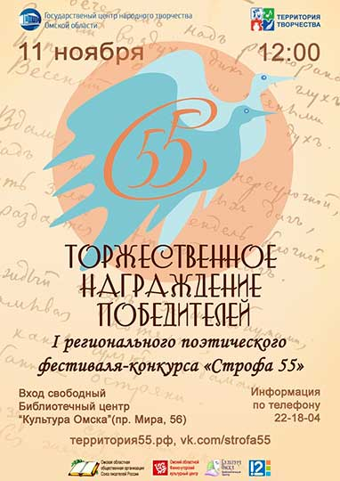

Первый региональный поэтический фестиваль-конкурс "Строфа 55".

Омская региональная общественная организация поддержки профессионального и любительского искусства "Территория творчества" является объединением творческих, инициативных людей, заинтересованных в поиске и реализации новых культурных проектов. Среди реализуемых нами проектов Поэтический фестиваль-конкурс "Строфа 55", целью которого является содействие популяризации и развитию литературного творчества в Омском регионе.
В задачах, решаемых фестивалем:
- поиск и стимулирование творчества начинающих авторов;
- поиск и развитие новых форм и форматов в литературе и искусстве;
- поддержка творчества самодеятельных авторов Омской области.
В жюри фестиваля войдут:
- Валентина Юрьевна Ерофеева–Тверская, член Союза писателей России (СПР в). Секретарь правлений Союза писателей России и "Ассоциации писателей Урала", Председатель правления Омской организации СПР, член-корреспондент "Академии поэзии";
- Сергей Александрович Демченков, кандидат филологических наук, доцент, заведующий кафедрой русской и зарубежной литературы Омского государственного университета им. Ф.М. Достоевского. Сооснователь "Киноблога "Flicker". С 2011 по 2017 гг. — региональный координатор Международной образовательной акции "Тотальный диктант" по Омской области. С 2010 г. – зам. декана факультета филологии и медиакоммуникаций ОмГУ им. Ф.М. Достоевского по научной работе.
Координатор фестиваля от ОРОО "Территория творчества" -
Блюме Павел Афанасьевич,
strofa55@list.ru.
Итоги первого регионального поэтического конкурса "Строфа55"
11 ноября в Библиотечном центре "Культура Омска" состоялось Торжественное награждение победителей I регионального поэтического фестиваля-конкурса "Строфа 55"!
"Строфа 55" в 2018 году - это:
- ✔более 100 заявок
- ✔ 20 финалистов вошли в Лонг-лист
- ✔ 3 номинации
- ✔ 2 возрастные категории
Благодарим участников, ещё раз поздравляем победителей с заслуженными наградами!
Возрастная категория до 35
Номинация "О лирике на первом месте" (тема любви, природы в творчестве современных омских авторов):
- I место – Арина Сергеевна Кондакова
- II место – Антон Николаевич Суслов
- III место – Владимир Андреевич Еськин
- III место – Максим Александрович Лау
Номинация "Где-то есть город тихий, как сон" (тема Родины в творчестве современных омских авторов):
- I место – Мария Федоровна Рыбакова
- II место – Елена Олеговна Поплавская
- III место – Надежда Викторовна Перегонцева
Возрастная категория от 35 и старше
Номинация "О лирике на первом месте" (тема любви, природы в творчестве современных омских авторов);
- I место – Ирина Ивановна Резник
- II место – Любовь Николаевна Сушко
- III место – Нина Ивановна Попова
Номинация "Где-то есть город тихий, как сон" (тема Родины в творчестве современных омских авторов):
- I место – Виктор Николаевич Шаханин
- II место – Владимир Иванович Герасимов
- III место – Елена Николаевна Монченко
Номинация "Традиции связующая нить" (лучшее стихотворение, популяризирующее традиционную культуру и народное творчество):
- I место – Валентина Григорьевна Останина
- II место – Зинаида Николаевна Гринева
- III место – Ксения Диодоровна Тарасова